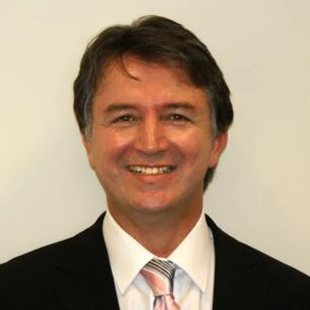
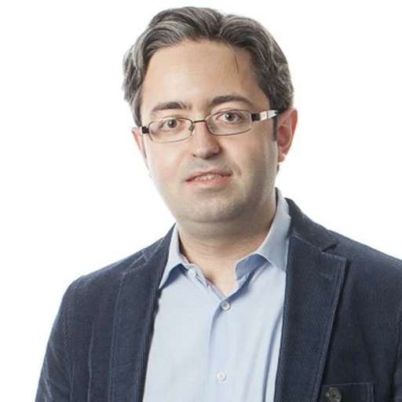

Scope and Motivation
Trust in automated driving is a claim about failure bounds, not average accuracy. A trustworthy perception system keeps errors bounded, detectable at runtime, and traceable to evidence, so the motion planner can identify untrusted inputs.
Cameras, LiDAR, and frequency-modulated continuous-wave radar measure physical environments directly, so an adversary who manipulates physical phenomena controls system inputs - through printed patches, light projections, spoofed radar chirps, or injected LiDAR returns. At the digitisation boundary these arrive as physically valid measurements that bypass software integrity checks.
Perturbations then propagate through calibration, data association, multi-modal fusion, and object tracking: a suppressed detection yields a missing track, and a missing track yields a trajectory that does not brake. Multi-modal representations and vision-language-action models extend this attack surface across semantic boundaries.
Conventional robustness metrics report model output accuracy and cannot quantify closed-loop safety impact. TPAD establishes an end-to-end signal processing and assurance perspective. Submissions must explicitly define four structural parameters:
- ▪Attacker Access - physical, digital, or semantic vector control.
- ▪Injection Point - the entry stage within the processing pipeline.
- ▪Stages Affected - downstream propagation across perception and tracking.
- ▪Measurement Point - sensor, perception, planner, or closed-loop trajectory level.
Standardizing these parameters enables direct cross-study alignment. The programme includes peer-reviewed papers, a plenary keynote, a poster session, a technical roundtable on sensor redundancy, and an executive panel on benchmarks. Accepted papers will be published in the IEEE Xplore Digital Library.
Topics of Interest
We invite original contributions across the perception-to-action chain, including but not limited to:
Technical Program (TBD)
TPAD 2027 is a full-day event combining peer-reviewed oral papers, a plenary keynote, a poster session, a roundtable, and an executive panel. The detailed schedule will be published here once the review process is complete.
Plenary Keynote

Prof. Panos Nasiopoulos
Department of Electrical and Computer Engineering, University of British Columbia, Canada
https://ece.ubc.ca/panos-nasiopoulos/
Title: TBD
Abstract: TBD
Bio: Dr. Panos Nasiopoulos earned a Bachelor's degree in physics from the Aristotle University of Thessaloniki, Greece, and his Bachelor's, Master's, and Ph.D. degrees in electrical and computer engineering from the University of British Columbia (UBC), Canada. He is a professor with the Department of Electrical and Computer Engineering and the former Director of the Institute for Computing, Information and Cognitive Systems and the Master of Software Systems at UBC. Before joining UBC, he was the President of Daikin Comtec US (co-founder of DVD) and Executive Vice President of Sonic Solutions. His research interests are primarily in the area of Digital Video Processing and Coding, he is the author or co-author of more than 250 research publications, and holds several patents. Dr. Nasiopoulos is a registered member of the Association of Professional Engineers and Geoscientists of British Columbia (APEGBC), Canada. He is a Fellow of IEEE, a Fellow of the Canadian Academy of Engineering, and has been an active member of the Standards Council of Canada, MPEG, SMPTE and IEEE.
Organizing Committee
Christos Korgialas
Department of Informatics, Aristotle University of Thessaloniki; NOEMAC PC, Greece
ckorgial@csd.auth.gr · Website
Ph.D. candidate in the Artificial Intelligence and Information Analysis Laboratory, Department of Informatics, Aristotle University of Thessaloniki, and Senior Software Engineer and Project Manager at NOEMAC PC. His work spans multimedia forensics, transferable black-box adversarial attacks, explainable AI, and multimodal information analysis. He has contributed to funded national and European projects, co-organized the AEGIS summer school, served on technical committees, and reviews for IEEE venues.
Pai Chet Ng
Infocomm Technology Cluster, Singapore Institute of Technology, Singapore
paichet.ng@singaporetech.edu.sg · Website
Assistant Professor in the Infocomm Technology Cluster at the Singapore Institute of Technology. Her research covers computational hyperspectral imaging, applied AI for IoT, multimodal sensing, federated learning, wireless sensing, and human-robot interaction. She has organized hyperspectral data challenges at ICASSP and workshops on privacy-preserving and trustworthy AI, providing direct experience in programme design, participant engagement, and challenge governance.
Xiaoxiao Miao
Division of Natural and Applied Sciences, Duke Kunshan University, Kunshan, China
xiaoxiao.miao@dukekunshan.edu.cn · Website
Assistant Professor of Computer Science at Duke Kunshan University, previously Assistant Professor at the Singapore Institute of Technology (2023-2025) and postdoctoral researcher at the National Institute of Informatics, Japan (2021-2023). Her research addresses speech privacy, speaker anonymisation, and trustworthy speech processing, published in IEEE/ACM TASLP, IEEE TIFS, Neural Networks, Computer Speech and Language, ICASSP, and INTERSPEECH. She co-organized the VoicePrivacy Challenges (2022, 2024) and the VoicePrivacy Attacker Challenge at ICASSP 2025, bringing direct experience in challenge design, evaluation protocols, and participant coordination.

Arash Mohammadi
Concordia Institute for Information Systems Engineering, Concordia University, Canada
arash.mohammadi@concordia.ca · Website
Associate Professor at the Concordia Institute for Information Systems Engineering and a registered Professional Engineer in Ontario. His research includes statistical signal processing, information fusion, state estimation, machine learning, and cyber-physical systems. He has served as IEEE SPS Director of Membership Development, ICASSP Challenge Co-Chair, IEEE ICHMS Program Chair, IEEE ICAS General Co-Chair, and IEEE ICIP Special Session Chair, and has led work on trustworthy human-autonomy teaming.
Konstantinos N. PlataniotisScientific Advisor
Department of Electrical and Computer Engineering, University of Toronto, Canada
kostas@ece.utoronto.ca · Website
Professor and Bell Canada Endowed Chair in Multimedia at the University of Toronto, where he directs the Multimedia Laboratory. An IEEE Fellow and Fellow of the Canadian Academy of Engineering, his research spans signal and image processing, machine learning, adaptive systems, multimedia, and biometrics. He has served as IEEE Signal Processing Society President and as General Co-Chair of ICASSP 2021 and ICIP 2018, bringing extensive scientific leadership and conference-governance experience.